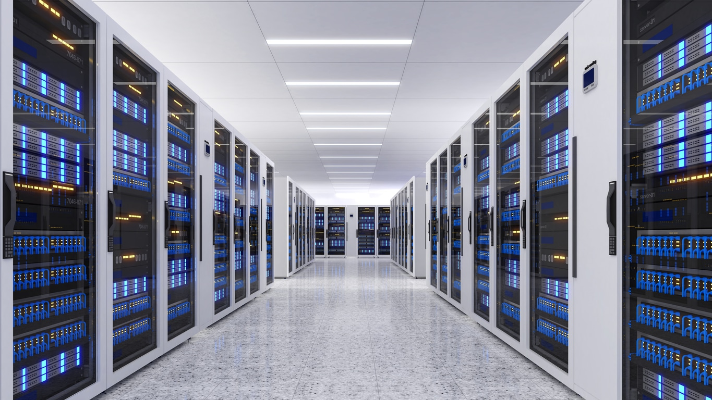

Data Center

Imagem do site Crypto ID
Os data centers são grandes instalações projetadas para abrigar servidores e sistemas de rede de forma segura e estável. Eles são construídos com salas climatizadas, sistemas de segurança e ambientes redundantes, que previnem falhas. Cada sala contém racks — estruturas metálicas que armazenam os servidores de forma organizada.
Equipamentos de Rede
Para que os servidores se comuniquem entre si e com a internet, são utilizados equipamentos de rede, como:
- Roteadores: direcionam o tráfego de dados;
- Switches: conectam os servidores em uma mesma rede local;
- Firewalls: protegem contra acessos indevidos e ataques.
Esses dispositivos garantem velocidade, segurança e estabilidade na comunicação.
Armazenamento
O coração de um data center é o armazenamento de dados. São utilizados:
- Servidores com discos SSD ou HDD, que armazenam informações com rapidez;
- Sistemas NAS e SAN, que permitem o compartilhamento de armazenamento entre vários servidores;
- Backups automáticos e redundância, garantindo que os dados não se percam, mesmo em caso de falha.
Energia e Refrigeração
Esses locais consomem muita energia e produzem calor intenso. Por isso, utilizam:
- Fontes redundantes de energia, como UPS e geradores, para evitar que os servidores desliguem;
- Sistemas de refrigeração e ar-condicionado de precisão, que mantêm temperatura e umidade ideais;
- Sensores inteligentes, que controlam o clima em tempo real.
Monitoramento
O funcionamento de um data center é monitorado constantemente por:
- Softwares de gestão, que acompanham temperatura, uso de CPU, rede e energia;
- Alertas automáticos, que sinalizam falhas ou riscos;
- Equipes especializadas disponíveis 24 horas por dia, 7 dias por semana, garantindo que todos os sistemas permaneçam online e seguros.